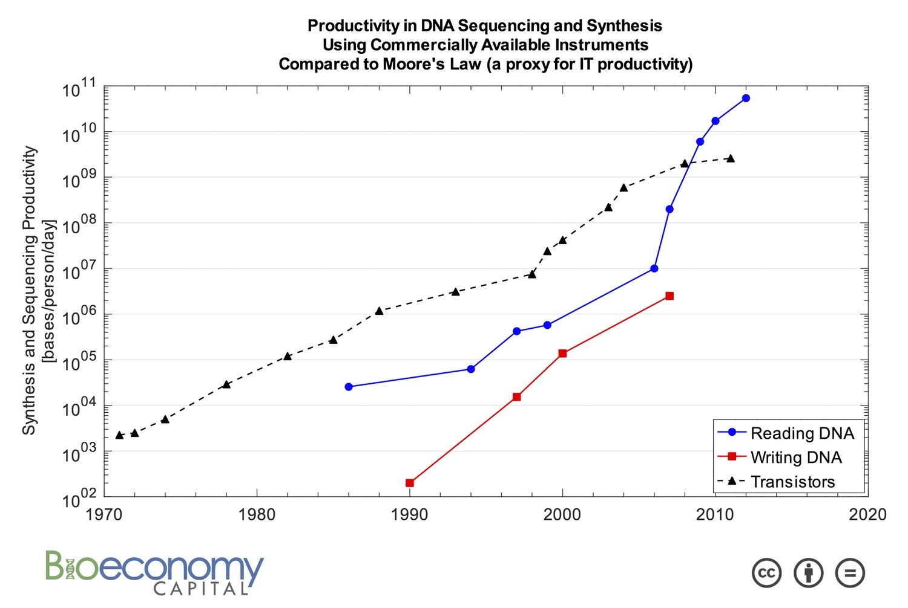

Information Theory and Computer Storage
How do computers store and interpret information?
Computers are composed of:
- Memory: stores bits, 0s and 1s
- CPU: circuits, a combination of AND/OR/etc gates that specifiy logic
Who makes these circuits? Us!
What makes these circuits "run"?
Transistors, which amplify or switch electrical signals (current)
- 0 → turn off the current
- 1 → amplify current
But what if we want these circuits to run even faster? Run more circuits or run more complicated logic?
We can put more transistors per unit of space. This means we need to make transistors smaller and smaller...
Can we do this forever?
Can we do this forever?
Sadly, no. Why?
- as we put more transistors on a chip, the cost decreases, but rate of defects increases
- at small transistor sizes, current leakage becomes a more drastic issue, causing the chip to heat up (thermal runaway), increasing energy costs
- we made transistors one carbon atom thick, but they don't work correctly because of quantum tunneling
This means we have reached the limit of transistors per unit of space.
Can we do this forever?
Why would tunneling be a problem?
Quantum tunnelling of a lion through a barrier is a quantum effect with no classical analog. (CC BY-NC 4.0; Ümit Kaya via LibreTexts)
Why is DNA becoming a new storage medium?
Why is DNA becoming a new storage medium?
What is information theory?
- collaboration between engineering, math and computer science
- tries to answer the question: how we do transmit information correctly, reliabily, quickly?
- quantitative measure for information communicated by a message
Transmission and storage of information is not perfect!
- sending and storing information in the real world is an uncertain process
- we can't assume a message has no errors when decoding it
- so we have to use probabilities to make an informed guess
What is error correction?
Detecting and correcting errors over unreliable or noisy communication channels
Why is error correction different for DNA?
- high rate of deletion and insertion errors
- synthesis and sequencing DNA itself has inherently higher rates of error
- DNA sequences are short, so we don't want to lose too much information density with redundancy introduced by error correction
What are error correction codes?
Form of redundant information, part of entire message, to help detect and correct for errors in the information containing portion of the message.
Can be outer (don't encode for information, purely redundant), or inner (encode for information and redundancy)
What are some examples of DNA focussed error correction?
HEDGES

What are some examples of DNA focussed error correction?
HEDGES

What are some examples of DNA focussed error correction?
Fountain Codes
What are some examples of DNA focussed error correction?
Outer Codes: Guess & Check+: Correcting Insertions and Deletions in Short DNA sequences
- Uses Reed-Solomon outer code to encode redundancies
- Within redundant bits, portion of the bits store different possible indel patterns as 'guesses'
- Rest of the parity bits encoded are 'checks' i.e. repetitive bits, used to check against guessed indel pattern
Rectangular Codes
- simple ECC capable correcting one error, and detecting more errors
- arrange a message of hl bits into a h x l matrix
- add a parity check bit for each row and column, resulting in a code word of length (h + 1)(l + 1)
Rectangular Codes
- arrange a message of hl bits into a h x l matrix
- add a parity check bit for each row and column, resulting in a code word of length (h + 1)(l + 1)
What's a parity check bit?
- signifies how many 1s in a sequence
- even number of 1s → 0
- odd number of 1s → 1
Activity: Decode this message
Activity: Decode this message
Activity: Decode this message
Activity: Decode this message
Sources
- http://www.cs.toronto.edu/~rahulgk/courses/csc311_f22/tutorials/tut03.pdf
- https://en.lntwww.de/Category:Information_Theory:_Exercises
- https://www.fi.muni.cz/~xbouda1/teaching/current/IV111/cviceni/ex05.pdf
- http://www.inference.org.uk/mackay/itila/ExtraExercises.html
- https://staff.science.uva.nl/c.schaffner/courses/inftheory/2014/inf14fall-ex1.pdf
- https://www.cl.cam.ac.uk/teaching/0910/InfoTheory/Exercises09.pdf
- https://www.synthesis.cc/synthesis/2022/10/dna-synthesis-cost-data
- https://en.wikipedia.org/wiki/Moore%27s_law
- https://www.mathstat.dal.ca/~janssen/2113/notes/c22.pdf
- https://chem.libretexts.org/Bookshelves/Physical_and_Theoretical_Chemistry_Textbook_Maps/Supplemental_Modules_(Physical_and_Theoretical_Chemistry)/Quantum_Mechanics/02._Fundamental_Concepts_of_Quantum_Mechanics/Tunneling